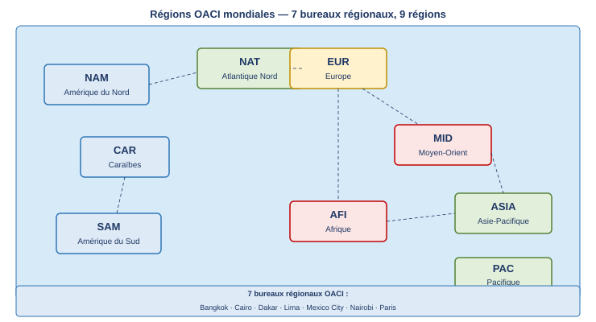
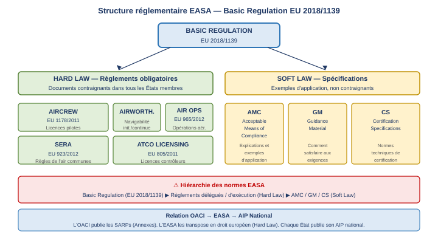

1. Vue d'ensemble des organisations
L'aviation civile internationale est régie par plusieurs organisations mondiales aux mandats distincts. On distingue les organisations réglementaires, dont les textes s'imposent aux États ou aux opérateurs (OACI, EASA, Eurocontrol), des organisations commerciales dont le rôle est de faciliter la coopération entre compagnies aériennes (IATA).
2. L'OACI — Organisation de l'Aviation Civile Internationale
2.1 Origine : la Convention de Chicago
L'OACI (Organisation de l'Aviation Civile Internationale) — en anglais ICAO (International Civil Aviation Organisation) — est une agence spécialisée des Nations Unies, créée par la Convention de Chicago signée le 7 décembre 1944. Son siège est à Montréal (Canada).
La Convention de Chicago comprend 96 articles et 19 Annexes (appelées SARPs — Standards and Recommended Practices). Elle constitue le fondement juridique de l'aviation civile internationale moderne.
2.2 Objectifs de l'OACI (Article 44)
Les objectifs de l'OACI sont définis à l'article 44 de la Convention de Chicago. Ils visent à assurer le développement ordonné et sûr de l'aviation civile internationale :
- Assurer le développement sûr et ordonné de l'aviation civile internationale ;
- Encourager le développement d'aéronefs à des fins pacifiques ;
- Encourager le développement des routes aériennes, aéroports et installations de navigation aérienne ;
- Éviter la discrimination entre États contractants ;
- Promouvoir la sécurité des vols en navigation aérienne internationale ;
- Promouvoir le développement de tous les aspects de l'aviation civile internationale ;
- Établir une réglementation uniforme entre États contractants.
2.3 États membres
L'OACI compte aujourd'hui 193 États contractants, ce qui en fait l'une des organisations internationales les plus universelles. Chaque État signataire de la Convention de Chicago est lié par ses dispositions.
3. Structure de l'OACI
3.1 L'Assemblée
L'Assemblée de l'OACI est l'organe souverain de l'organisation. Elle regroupe les 193 États membres avec le principe d'égalité : 1 État = 1 vote. Elle se réunit au moins une fois tous les 3 ans. Une assemblée extraordinaire peut être convoquée à la demande d'1/5 des membres.
Les pouvoirs et devoirs de l'Assemblée sont notamment d'élire son Président (tous les 3 ans), d'élire les États siégeant au Conseil, de voter le budget, et de déléguer au Conseil les pouvoirs et l'autorité nécessaires.
3.2 Le Conseil
Le Conseil de l'OACI est un organe permanent composé de 36 membres élus par l'Assemblée. Sa composition garantit une représentation adéquate des États d'importance majeure dans le transport aérien ainsi que de toutes les grandes zones géographiques du monde.
Les fonctions obligatoires principales du Conseil sont les suivantes :
- Travailler aux objectifs fixés par l'Assemblée ;
- Administrer les finances de l'organisation ;
- Signaler aux États contractants toute infraction à la Convention ;
- Définir les missions de la Commission de navigation aérienne ;
- Adopter les normes et pratiques recommandées internationales (SARPs) à la majorité des 2/3 du Conseil. Les modifications entrent en vigueur dans un délai de 3 mois après soumission aux États contractants, sauf si la majorité des États signifie son désaccord.
3.3 La Commission de Navigation Aérienne (CNA)
La Commission de Navigation Aérienne (Air Navigation Commission) est composée de 19 membres nommés par le Conseil parmi les personnes désignées par les États contractants. Sa mission principale est de proposer les modifications aux Annexes de la Convention (SARPs).
3.4 Le Secrétariat — structure des bureaux
Le Secrétariat de l'OACI, basé à Montréal, se compose de cinq bureaux aux missions complémentaires :
- Bureau de la Navigation Aérienne : 19 experts de la Commission de Navigation Aérienne ; élabore les SARPs — réglementation commune mondiale ;
- Bureau du Transport Aérien : assistance d'experts, statistiques, anticipation de l'avenir ;
- Bureau des Affaires juridiques : problèmes constitutionnels, droit aérien, droit commercial ;
- Bureau de la Coopération Technique : mise en œuvre de projets — nouveaux membres, nouveaux équipements, nouvelles compagnies ;
- Bureau de l'Administration et des Services : support administratif.
4. Organisation régionale et publications
4.1 Les 7 bureaux régionaux et les 9 régions OACI
L'OACI a mis en place 7 bureaux régionaux pour assurer le suivi opérationnel de ses 193 membres. Ces bureaux gèrent collectivement les 9 régions OACI mondiales. Chaque bureau régional est accrédité auprès d'un groupe d'États contractants. Leur mission principale est le maintien, l'encouragement, l'assistance et le suivi de la mise en œuvre des plans de navigation aérienne.

4.2 Publications de l'OACI
L'OACI produit trois catégories de publications :
SARPs — Standards and Recommended Practices
Les SARPs (Standards and Recommended Practices) — normes et pratiques recommandées — constituent les 19 Annexes de la Convention de Chicago. Elles forment la réglementation commune mondiale de l'aviation civile. Un Standard (norme) est obligatoire ; une Recommended Practice est vivement conseillée mais non contraignante.
| Annexe | Contenu | Annexe | Contenu |
|---|---|---|---|
| 1 | Personnel Licensing | 11 | Air Traffic Services |
| 2 | Rules of the Air | 12 | Search and Rescue |
| 3 | Meteorological Service | 13 | Aircraft Accident & Incident Investigation |
| 4 | Aeronautical Charts | 14 | Aerodromes |
| 5 | Units of Measurement | 15 | Aeronautical Information Services |
| 6 | Operation of Aircraft | 16 | Environmental Protection |
| 7 | Aircraft Nationality & Registration Marks | 17 | Security |
| 8 | Airworthiness of Aircraft | 18 | Safe Transport of Dangerous Goods by Air |
| 9 | Facilitation | 19 | Safety Management |
| 10 | Aeronautical Telecommunications |
PANS — Procedures for Air Navigation Services
Les PANS (Procedures for Air Navigation Services) complètent les SARPs en précisant les procédures opérationnelles. Les deux principaux PANS utilisés en ATPL sont :
- PANS-OPS (Doc 8168) : procédures opérationnelles pour la production des cartes de vol aux instruments (procédures de départ, d'attente, d'approche) ;
- PANS-ATM (Doc 4444) : Air Traffic Management — procédures pour le service du contrôle de la circulation aérienne.
SUPPS — Suppléments régionaux
Lorsque des procédures de navigation spécifiques à un État diffèrent des procédures OACI, cet État doit les communiquer au Conseil. Chaque État publie sa réglementation nationale sous forme d'une AIP (Aeronautical Information Publication), qui incorpore les règles OACI et les dérogations nationales accordées par l'OACI.
5. L'EASA — European Aviation Safety Agency
5.1 Présentation
L'EASA (European Aviation Safety Agency) — Agence européenne de la sécurité aérienne — a été créée par règlement européen et son siège est établi à Cologne (Allemagne) depuis 2002. Elle regroupe 27 États membres (UE) auxquels s'ajoutent plusieurs États associés (Suisse, Islande, Norvège…).
À partir de 2008, l'EASA a progressivement étendu ses tâches exécutives et réglementaires à tous les domaines de l'aviation civile européenne.
5.2 Domaines de compétence
L'EASA est compétente dans les domaines suivants :
- Navigabilité (Airworthiness) : initiale et continue ;
- Autorisation des aéronefs étrangers en Europe ;
- Licences de pilotes (Pilot licences) ;
- ATM — Règles de l'air communes (SERA) ;
- Aérodromes ;
- Licences des contrôleurs aériens (ATCO Licensing).
5.3 Documents EASA — Hard Law et Soft Law
La structure réglementaire de l'EASA distingue deux grandes catégories de textes :
Le Hard Law (droit contraignant) regroupe les règlements obligatoires dans tous les États membres. Le texte fondateur est le Basic Regulation EU 2018/1139, qui remplace les anciens règlements. Les principaux règlements d'application sont :
- AIRCREW EU 1178/2011 — licences et qualification des membres d'équipage de conduite ;
- Airworthiness — exigences de navigabilité ;
- Air Operations EU 965/2012 — opérations aériennes commerciales et non commerciales ;
- SERA (EU 923/2012) — Standardised European Rules of the Air (règles de l'air communes en Europe) ;
- ATCO Licensing EU 805/2011 — licences des contrôleurs de la circulation aérienne.
Le Soft Law (droit souple) comprend les spécifications non contraignantes, c'est-à-dire des exemples d'application acceptés des règlements :
- AMC (Acceptable Means of Compliance) : explications et exemples d'application des règlements ;
- GM (Guidance Material) : comment satisfaire aux exigences réglementaires ;
- CS (Certification Specifications) : normes techniques de certification.

5.4 Air Ops — Règlement EU 965/2012
Le règlement Air Operations EU 965/2012 couvre toutes les opérations commerciales et non commerciales. Il comprend 10 articles et 5 Annexes :
- Annexe 1 — Définitions ;
- Annexe 2 — Part ARO (Authority Requirements for Air Ops) : exigences pour les autorités compétentes en matière d'opérations aériennes ;
- Annexe 3 — Part ORO (Organisation Requirements for Air Ops) : exigences pour les opérateurs assurant du transport aérien commercial ;
- Annexe 4 — Part CAT (Commercial Air Transport) : équipements à embarquer en transport aérien commercial ;
- Annexe 5 — Part SPA (Specific Approvals) : approbations spécifiques (transport de marchandises dangereuses, opérations par faible visibilité, etc.).
6. Eurocontrol
6.1 Présentation
Eurocontrol (Organisation européenne pour la sécurité de la navigation aérienne) a été fondée en 1963. Elle regroupe 41 États membres. Son siège est à Bruxelles.
Ses objectifs principaux consistent à promouvoir, en coopération avec les autorités militaires nationales : les mesures améliorant la sécurité de la navigation aérienne, et l'optimisation du flux de trafic aérien.
6.2 Gestion des flux — CFMU / CEU et ATFM
Le premier programme majeur d'Eurocontrol est la gestion des flux de trafic aérien (ATFM — Air Traffic Flow Management), assurée par la CFMU (Central Flow Management Unit) — unité centrale de gestion des flux — ou CEU (Central Executive Unit). Ses objectifs sont :
- Mettre fin à la saturation du trafic IFR et optimiser les vols IFR ;
- Calculer et allouer des créneaux de décollage (slots) : le CTOT (Calculated Take-Off Time) — heure de décollage calculée — a une validité de 15 minutes (−5 min à +10 min).
Le pilote doit décoller dans cette fenêtre de 15 minutes. Hors fenêtre → nouveau slot à demander.
6.3 EATCHIP et Flexible Use of Airspace (FUA)
Le second programme majeur est l'EATCHIP (European Air Traffic Control Harmonisation and Integration Programme) — programme d'harmonisation et d'intégration du contrôle aérien européen — dont l'objectif central est le concept de FUA (Flexible Use of Airspace), défini à Copenhague en 1994.
Le principe du FUA est d'optimiser l'utilisation de l'espace aérien supérieur en allouant temporellement les zones et niveaux aux utilisateurs civils et militaires. Il définit plusieurs types d'espaces spéciaux :
- CDR (Conditional Routes) : routes conditionnelles IFR, ouvertes ou fermées selon l'activité militaire ;
- TSA (Temporary Segregated Areas) : zones temporairement ségrégées — domaine militaire ;
- CBA (Cross Border Areas) : zones transfrontalières militaires ;
- TRA (Temporary Restricted Areas) : zones temporairement restreintes — domaine militaire.
6.4 Le Ciel Unique Européen — SES (Single European Sky)
Le règlement SES EC 550/2004 — Single European Sky — constitue le cadre législatif pour la restructuration de l'espace aérien européen. Ses objectifs clés sont de restructurer l'espace aérien européen selon des critères de flux (et non plus de frontières nationales) et d'augmenter l'efficacité globale du système ATM européen. L'EASA a délégué certaines parties de ce cadre réglementaire à Eurocontrol.
7. L'IATA — International Air Transport Association
7.1 Présentation
L'IATA (International Air Transport Association) — Association internationale du transport aérien — est une organisation commerciale (non réglementaire) fondée à La Havane en avril 1945. Son siège est à Montréal. Elle regroupe aujourd'hui 293 compagnies aériennes représentant environ 90 % du trafic mondial.
7.2 Rôle de l'IATA
L'IATA est une organisation de coopération inter-compagnies. Son rôle est :
- Promouvoir le développement d'un transport aérien sûr et économique ;
- Favoriser la coopération inter-compagnies : partage d'informations techniques et économiques, coordination tarifaire.